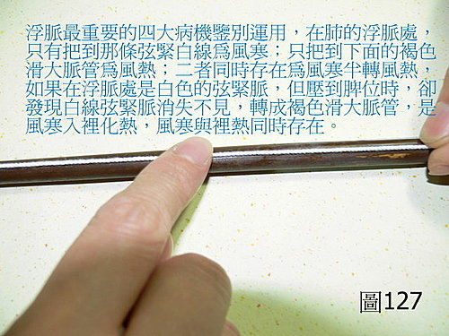
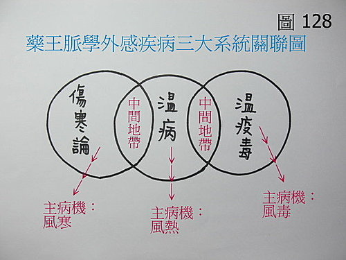

脈理醫理學 33.1.1：浮脈（二）‥‥‥脈法運用‥‥如何用脈法判別風寒、風熱、風寒兼風熱、風寒入裡化熱、風毒的不同。無聊的寒溫之爭。
作者：陳建元
當望聞問診發現有一系列的鼻塞鼻水、咳嗽、頭痛、項背緊酸、筋骨疼痛等上呼吸道感冒症狀時，單純用頭項強痛、惡寒、脈浮等傷寒論描述、或涕黃涕白、痰黃痰白這樣來判斷風熱風寒等病機，往往是不夠的、模糊的，因為病譜是連續的，外候（外證）往往不典型，互有轉化重疊夾雜，明顯的外候（外證）可以用問的得知，但更進一步要開藥用的確診病機，不從脈象著手，只是模糊籠統的辨證論治。

〈圖127〉是浮脈使用頻率最高的四大病機的使用方法：
1. 在肺的浮脈處只把到那條白線的，病機是風寒。治用麻黃、桂枝、紫蘇等去風寒藥。即傷寒論太陽篇中那些主要條目（桂枝湯、麻黃湯（辛溫解表））的概念。
2. 在肺的浮脈處只把到如筆管滑大的，病機是風熱。治用菊花、桑葉、金銀花、連翹等去風熱藥。即溫病學衛分證中那些主要條目（銀翹散、桑菊飲（辛涼解表））的概念。
3. 如果上述二者同存，滑大脈中又夾一線，病機是風寒入裡，鬱滯之後漸轉風熱，是風寒風熱並存。治用麻黃、桂枝＋菊花、連翹，即去風寒藥與去風熱藥並用，即脈理醫理學第3條，病譜連續和脈譜連續的概念。
4. 如果是浮位只有發現有那條白線，然後是要壓到脾位，才會發現有如筆管的滑大脈鼓指，病機則是外有風寒，入裡化熱而變成兼有裡熱。治用麻黃＋石膏，即傷寒論中麻杏石甘湯的組方原意。
5. 風毒之脈不定，或浮或不浮，或細或澀，但必兼黏脈，脈的外形或清晰或模糊，鼓不起來則是共通點，外候〈外證〉見上述感冒見症不明顯，反而有一二中毒症狀明顯，或咽喉急痛，或乏力頭暈，或皮膚有出血紅點，來勢洶湧，半日即高燒，風毒也。治用上焦清熱解毒藥＋大黃之類以請鬼出門。即藥王脈學黏脈諸條所論述者。

〈圖128〉是藥王脈學外感疾病的三大系統的關聯圖。以此圖來看，病機是一目了然的，風寒、風熱、風毒三大體系，病機不同，脈象也長的不一樣，看病開藥病機要先分清，否則開口動手就錯，傷寒論與溫病體系會有一部份是交集，溫病體系和溫毒體系也有一部分是交集，病譜與病譜之間是有交集而連續的，並非傷寒或溫病學家所說的冰炭相反，也不存在對與不對的問題，兩邊講的都對，但看到的都只是一部份，千年的寒溫之爭，如果真懂脈法，根本不為所惑。傷寒當溫病治，一定惡化鼻水流不完，溫病當傷寒治，也會惡化化燥化熱，因為病機一寒一熱，方向不同，而風毒用普通的風寒風熱來醫，效果也不好。
‥‥‥‥‥‥‥‥‥‥‥‥‥‥‥‥‥‥‥‥‥‥‥‥‥‥‥‥‥‥‥‥‥‥‥‥‥‥
其他相關延伸：〈101年1月21日補入〉
【引用請先來信告知徵求同意，若有涉及販售營利等商業行為，版權所有拷貝盜用必究。】
【藥王脈學講壇】http://blog.xuite.net/drjychen/twblog